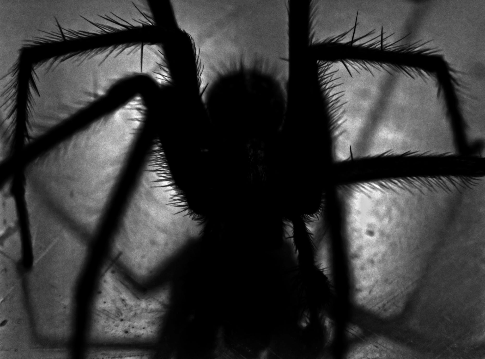

What do I consider futuristic technology?
I consider futuristic technology to be incredible developments in technology, which either
change society in monumental ways or begin
a complete rethink of our technology today
Necrobiotics
Necrobiotics means turning dead things into robots, which is almost as
disgusting as it sounds. A team of researchers at Rice University recently
managed to turn a dead
spider into a robot-like gripper. They did this by injecting air into the spider, since they
use their blood in a system much
more similar to pneumatics than our muscles.
AI image generation
AI has advanced rapidly in recent years, and is revolutionizing many diferent industries, from
chess to text generation, and, more recently, art.
Software such as DALL-E are able to create
completely origional artworks form simple (or silly) text prompts, such as "a brown dog in a coat in
Morissons eating cake".